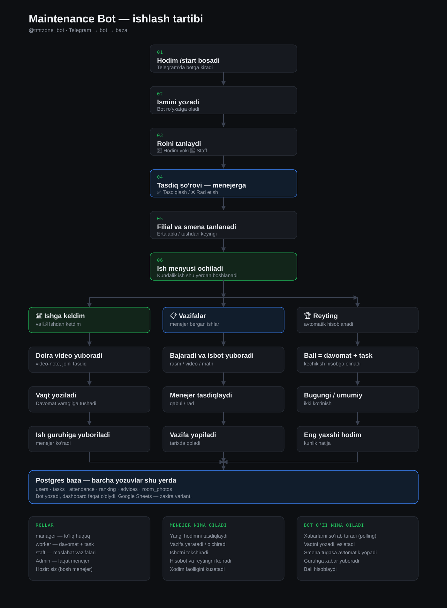

Qanday ishlaydi
Postgres · Railway · Python
- Kirish: /start → ism → rol → menejer tasdiqi → filial va smena.
- Har kuni: “Ishga keldim” / “Ishdan ketdim” — doira video bilan.
- Ish: vazifa beriladi → hodim isbot yuboradi → menejer tasdiqlaydi yoki rad etadi.
- Reyting: ball davomat va bajarilgan vazifadan yig‘iladi.
Ma’lumot qayerda
- Bot yozadi → Postgres (
sheets+sheet_rows). - Dashboard faqat o‘qiydi — hisobot va ro‘yxatlar uchun.
- Sheets endi asosiy manba emas.
Hozirgi holat
- Bot Railway’da Online.
- Baza bo‘sh: 0 hodim, 0 davomat, 0 vazifa.
- Admin — faqat Karim (
1054482233).